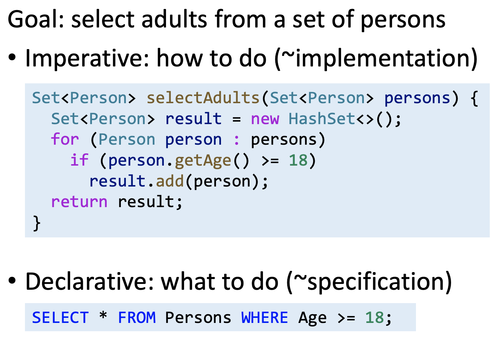
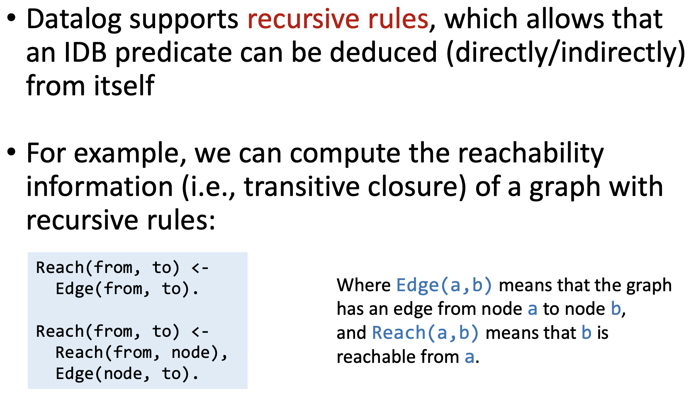
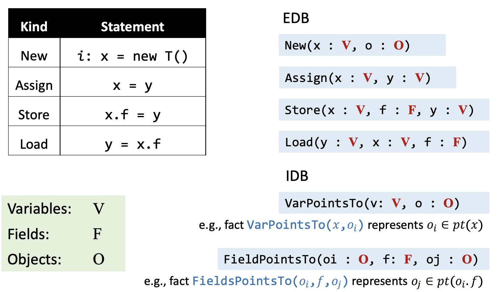

Static Program Analysis (Datalog)
Motivation
命令式语言（imperative） vs. 声明式语言（declarative）
命令式语言在做指针分析时要实现很多的细节：
而使用声明式语言实现指针分析是非常简洁的，具有可读性，而且易于实现：
Introduction to Datalog
Datalog 是一个声明式逻辑编程语言，是 Prolog 的子集；起初作为数据库查询语言，后来用途越来越广泛。
Datalog = Data + Logic (and, or, not)
- No side-effects
- No control flows
- No functions
- Not Turing-complete
Predicates (Data)
Datalog 中一个谓词（predicate）是一系列陈述的集合，本质上来讲一个谓词就是一张数据表（table）；fact（事实）断言一个元组满足（数据表中的）某个关系。
Datalog 中的谓词用原子（atom）表示，atom 是 Datalog 中最基本的元素，其表示形式如下：
参数 terms 有两种形式：
- 变量（variable）：代表任意值，如 Age(person,age)
- 常量（constant）：表示特定值，如 Age(“Xiaoming”,18)
atom 有两种类型：
- relation atom: P(X1,X2,…,Xn)
- arithmetic atom: age >= 18
Datalog Rules (Logic)
Rule 是表达逻辑推断的一种方式，也能用来说明如何推断 fact，rule 的格式如下：
注：逗号（,）可以理解为逻辑与
根据 Datalog Rules 枚举 body 中所有关系表达式的可能取值组合，进而得到新的 predicate/table。
EDB and IDB Predicates
Datalog 谓词分为两类：
-
EDB (Extensional DataBase)
- 在程序运行前已经定义
- 不可变
- 可以看做 input
-
IDB (Intensional DataBase)
- 由规则推导出来
- 可以看做 output
例如：H <- B1,B2,...,Bn.，H 只能是 IDB，Bi 可以是 EDB 或者 IDB。
Logical Or

Negation
Recursion
Rule Safety
思考以下两条 rules 是否是安全的？
A(x) <- B(y), x > y. |
对于第一条 rule，由于 B(y) 原子是有限的，满足该原子的 y 也是有限的，而满足 x>y 的 x 有无穷多个，因此 A(x) 是无限的；第二条 rule 同理，因此这两条规则都是不安全的。在 Datalog 中只接受安全的 rules。
如果 rule 中每个变量至少在一个 non-negated relational atom 中出现一次，那么这个 rule 就是安全的。
再看一条 rule：
A(x) <- B(x), !A(x) |
对于 subgoal A(x)，如果 A(x) 为 true，那么推导出来的 head A(x) 为 false；如果 subgoal A(x) 为 false，那么推导出来的 head A(x) 为 true。因此这条规则是矛盾的而且没有任何意义。
在 Datalog 的 atom 中，recursion 和 negation 必须要分开，不能在同一个 atom 中出现。
Execution of Datalog Programs
Datalog 的两大重要特性：
Monotonicity：因为 fact 是不会被删除的。（fact 的数量有限且确定）
Termination：一个 Datalog 程序必然会终止的，因为 Datalog 具有单调性，且推断出的 IDB 的值也是有限的（Rule safety）。
Pointer Analysis via Datalog
了解了 Datalog 的基本语法和性质，我们就可以用它来实现声明式的指针分析算法。其中三个重要的部分对应如下：
- EDB：从程序的语义分析中提取出和指针相关的信息
- IDB：指针分析的结果
- Rules：指针分析的规则
Datalog Model for Point Analysis
An Example
Datalog Rules for Point Analysis
An Example